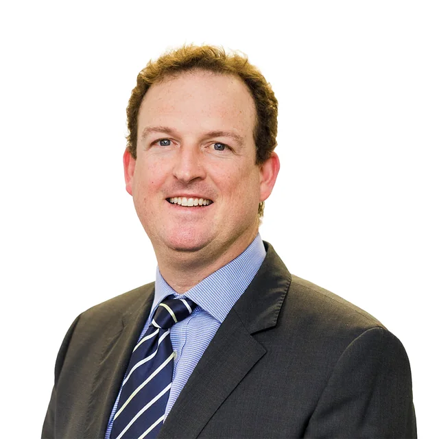
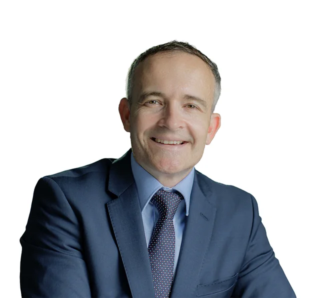
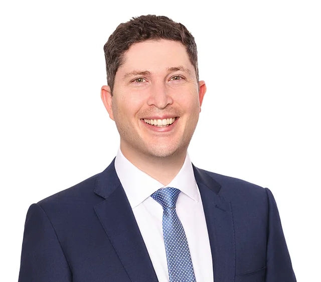
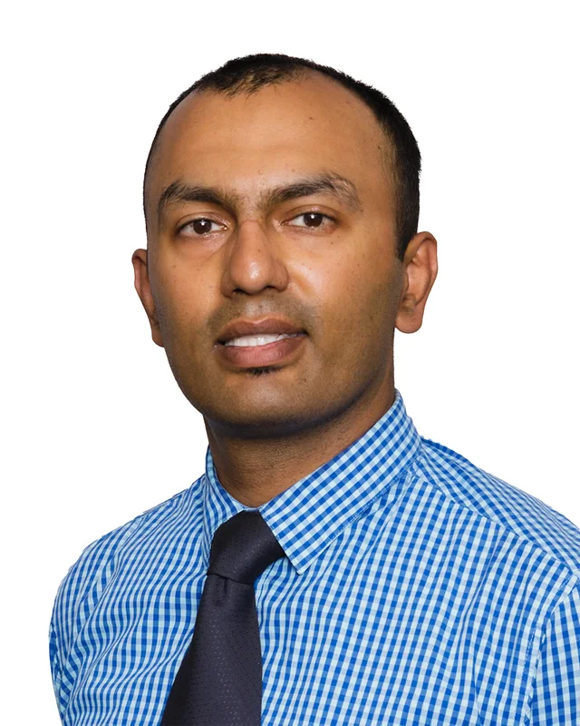

Dr Brendan Cronin
Cornea, Cataract and Anterior Segment
MBBS (hons) GradDipOphthSc, B.Com, LLB FRANZCO
View profileEvery QEI ophthalmologist is a Fellow of the Royal Australian and New Zealand College of Ophthalmologists with additional subspecialty fellowship training in Australia or overseas. Together they cover the full breadth of medical and surgical eye care.

Cornea, Cataract and Anterior Segment
MBBS (hons) GradDipOphthSc, B.Com, LLB FRANZCO
View profileCornea, Cataract, Laser and Refractive Eye Surgery Specialist
MBBS (Hons I), BSc, CertLRS, FRANZCO
View profile
Cornea, Cataract, Refractive and Glaucoma surgery
BAppSci Optom (Hons), MBBS, FRANZCO, CertLRS (RCOphth)
View profileRetina, Macula Specialist and Vitreoretinal Surgeon
MBChB (UK) MD(London) FRCOphth(UK) FRANZCO
View profileGeneral ophthalmologist, consultant neuro-ophthalmologist and glaucoma subspecialist
BMedSc/MBBS (Melbourne), Grad. Dip. Ophthalmic Sc. (Sydney), FRANZCO
View profileOculoplastics, Lacrimal and Orbital Surgery
MD, FRCOphth, FRANZCO, FANZSOPS
View profile
Medical Retina, Cataract, Uveitis, Genetic Ophthalmology
MD, M.MED, BAppSci (Optom)(Hons), FRANZCO
View profileEye Diseases and Neuro-Ophthalmology
MBBS Hons (QLD) MMedSc FRANZCO PhD
View profileCataract surgery, eyelid surgery, tear drainage surgery, macular degeneration & diabetic retinopathy
FRANZCO, MScMed(OphthSc), MBBS(Hons), BSc
View profileCATARACT, CORNEA, GLAUCOMA, LASER & REFRACTIVE SURGERY
MBBS, MMed, BSc, FRANZCO
View profile
Medical and Surgical Retinal Specialist
MBBS, DPhil (Oxon), FRANZCO
View profileModern small-incision cataract surgery with premium lens options.
Corneal transplants, keratoconus, cross-linking, CAIRS and pterygium surgery.
Macular degeneration, diabetic eye disease, retinal detachment and vitreoretinal surgery.
Medical, laser and surgical glaucoma care including minimally invasive glaucoma surgery.
Optic nerve and visual pathway disease, double vision and unexplained vision loss.
Eyelid, tear duct and orbital surgery including thyroid eye disease.
Therapeutic excimer laser (QEI Laser), laser vision correction and lens-based refractive procedures.
Diagnosis and management of inflammatory eye conditions.
Assessment of inherited retinal and genetic eye conditions.